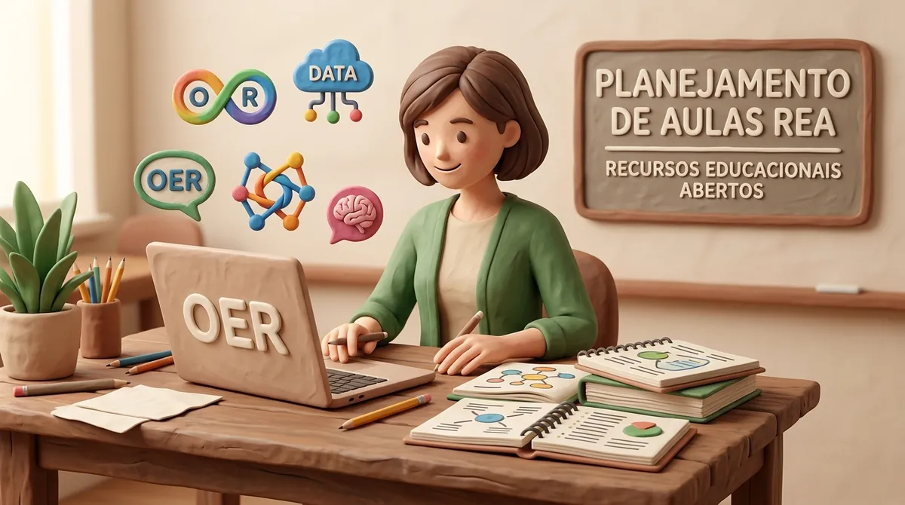

Como Planejar Aulas Investigativas Utilizando Recursos Educacionais Abertos (REA)

Neste texto
- Diferenciando OAD, RED e REA: Conceitos Fundamentais
- Roteiro Metodológico em 5 Passos para Integrar REA no Plano de Aula
- 1. Defina o Objetivo de Aprendizagem e a Habilidade da BNCC
- 2. Selecione o REA em Repositórios Confiáveis
- 3. Faça o Teste da Experiência do Estudante
- 4. Estruture a Mediação Pedagógica (Antes, Durante e Depois)
- 5. Avalie a Aprendizagem e Registre a Licença
- A Solução Bio+Tech EduDesign: REAs Prontos e Consultoria em Design Educacional
- Referências
A abundância de conteúdos digitais disponíveis na internet cria um falso paradoxo para os educadores: embora existam milhares de vídeos, simulações, jogos e apostilas a um clique de distância, o tempo gasto para garimpar, filtrar e adaptar esses materiais ao currículo da Educação Básica é frequentemente exaustivo. Sem um roteiro pedagógico claro, o uso de mídias digitais em sala de aula corre o risco de se tornar mera recreação ou fragmentação de conteúdo, frustrando professores e estudantes.
Para que a tecnologia sirva como alavanca da aprendizagem ativa, crítica e significativa, o planejamento didático deve anteceder a escolha do recurso. A adoção de Recursos Educacionais Abertos (REA) oferece o caminho ideal para otimizar o tempo de preparação de aulas, permitindo que professores utilizem, remixem e adaptem materiais criados e validados por outros educadores sob licenças flexíveis (AMIEIRO et al., 2020).
Diferenciando OAD, RED e REA: Conceitos Fundamentais
Antes de estruturar o plano de aula, é fundamental compreender as diferenças conceituais entre os tipos de recursos disponíveis no ecossistema de tecnologia educacional:
- OAD (Objeto de Aprendizagem Digital): Uma unidade digital pequena, autoconferível e reutilizável, projetada para atingir um objetivo de aprendizagem específico. Exemplo: um simulador interativo PhET sobre a escala de pH ou um jogo digital sobre ligações químicas.
- RED (Recurso Educacional Digital): Qualquer material didático em suporte digital (como e-books, podcasts, videoaulas ou infográficos). Nem todo RED é aberto; muitos possuem direitos autorais reservados que impedem alterações ou redistribuição.
- REA (Recurso Educacional Aberto): Qualquer recurso educacional (digital ou analógico) publicado sob uma licença aberta (como Creative Commons) ou em domínio público. O diferencial do REA é a permissão jurídica e técnica para utilizar, adaptar, combinar (remixar) e redistribuir o material de acordo com as necessidades locais da turma.
[ Recursos Educacionais ]
│
┌──────────────┴──────────────┐
▼ ▼
[ RED / OAD Fechados ] [ REA (Recursos Abertos) ]
(Uso restrito/copyright) (Usar, Adaptar, Remixar, Redistribuir)
Roteiro Metodológico em 5 Passos para Integrar REA no Plano de Aula
Para garantir que a utilização de um REA resulte em uma aprendizagem significativa alinhada às diretrizes da BNCC e da BNCC da Computação na área de Ciências da Natureza, siga este passo a passo testado no chão da escola:
1. Defina o Objetivo de Aprendizagem e a Habilidade da BNCC
O recurso nunca deve ser o ponto de partida do planejamento. Inicie identificando a habilidade específica da BNCC ou o código complementar da BNCC da Computação que deseja desenvolver. Por exemplo: (EF07CI08) Avaliar como os impactos provocados por catástrofes naturais ou mudanças ambientais afetam a biodiversidade.
2. Selecione o REA em Repositórios Confiáveis
Consulte catálogos confiáveis de Recursos Educacionais Abertos, como o repositório da Bio+Tech EduDesign ou plataformas institucionais. Avalie o resumo, os requisitos técnicos e as indicações de acessibilidade e faixa etária.
3. Faça o Teste da Experiência do Estudante
Antes de levar o REA para a sala de aula, realize a atividade completa assumindo o papel de estudante. Teste a abertura do arquivo ou link nos mesmos dispositivos que os alunos utilizarão (smartphones, tablets ou computadores da escola). Verifique se o recurso funciona offline caso a conectividade da escola seja instável.
4. Estruture a Mediação Pedagógica (Antes, Durante e Depois)
Um REA não substitui o papel mediador do professor. Planeje a sequência didática em três momentos essenciais:
- Antes: Ativação dos conhecimentos prévios e contextualização da dor ou problema a ser investigado.
- Durante: Orientação do uso do recurso em duplas ou grupos colaborativos, promovendo a investigação ativa.
- Depois: Sistematização dos conceitos, debate crítico e aplicação prática do aprendizado no território local.
5. Avalie a Aprendizagem e Registre a Licença
Combine a avaliação formativa integrada ao próprio recurso com uma pergunta reflexiva de fechamento. Lembre-se de registrar no seu plano de aula a fonte original, o autor e a licença do REA (ex.: CC-BY 4.0). Esse registro facilita o reuso por outros colegas da escola e fortalece a cultura do compartilhamento docente (SANTOS, 2012).
A Solução Bio+Tech EduDesign: REAs Prontos e Consultoria em Design Educacional
No portal Bio+Tech EduDesign, nos dedicamos a criar e curar Recursos Educacionais Abertos que conectam o ensino de Ciências da Natureza ao Pensamento Computacional, às Metodologias Ativas e às Humanidades por meio da Jornada STHEAM.
Se você deseja economizar tempo no seu planejamento ou quer capacitar sua equipe para produzir REAs institucionais com alto padrão pedagógico e acessibilidade:
- Acesse Nossos Kits REA Prontos: Baixe gratuitamente planos de aula, guias de experimentos e sequências didáticas investigativas prontas para aplicação imediata.
- Serviço de Consultoria e Produção de REA Sob Medida: Ajudamos redes públicas e privadas, faculdades de licenciatura e projetos educacionais a desenhar, adaptar e publicar seus próprios Recursos Educacionais Abertos de acordo com a BNCC.
👉 [Explore nosso repositório de REAs e baixe agora o Guia de Planejamento de Aulas com Tecnologias Abertas](https://bio-tech-edu.github.io/)
👉 Sua instituição quer criar um repositório próprio de REA ou formar professores em Design Instrucional? [Fale com nossos especialistas em consultoria de REA!]
Referências
AMIEIRO, Ana et al. Guia de Recursos Educacionais Abertos para Professores. São Paulo: Instituto Educadigital, 2020.
SANTOS, Andreia Inamorato dos. Recursos Educacionais Abertos (REA): Práticas colaborativas e políticas públicas. Brasília: UNESCO/Unicamp, 2012. Disponível em: https://unesdoc.unesco.org/ark:/48223/pf0000216551. Acesso em: 30 out. 2026.
Comentários
Verificando configuração dos comentários…